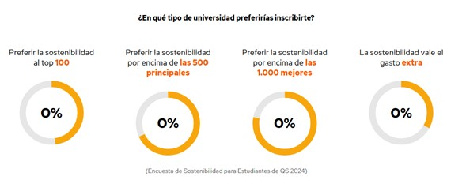
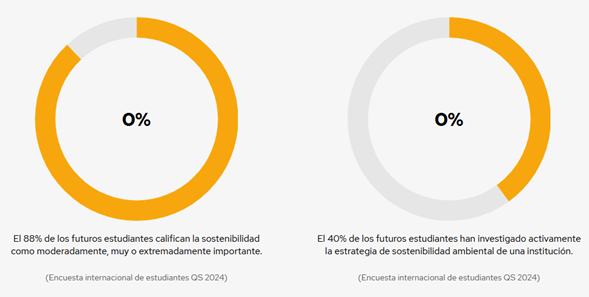
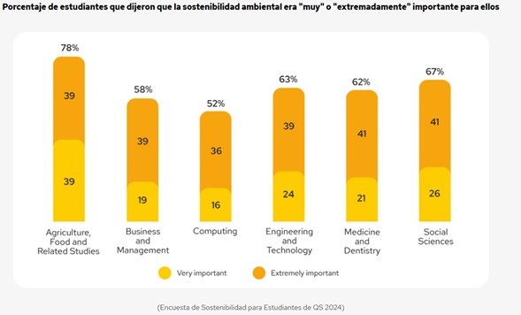
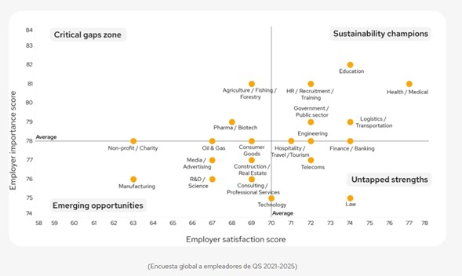
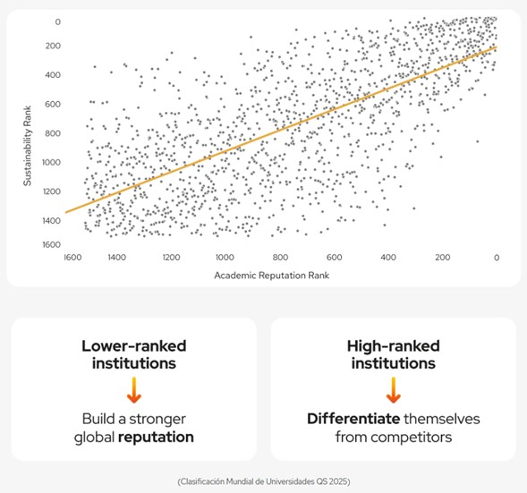

Muchas veces vemos correlaciones curiosas en la vida, un buen ejemplo es la correlación de los helados y ataques de tiburones donde la a primera vista ambos temas no parecen tener nada en común, no obstante ambas están correlacionadas, donde el factor principal de esta correlación es el sol, ya que cuanto más sol hay, más se disparan las ventas de los helados, y a su vez cuanto más sol hay, los bañistas realizan más actividades acuáticas, causando que puedan ser atacados por tiburones, por ello se dice que la correlación no implica causalidad.
Ahora bien, regresando con la cita anterior, al preguntarles en qué tipo de universidad preferirían matricularse, más de dos tercios de los estudiantes afirman preferir estudiar en una universidad sostenible antes que en una institución entre las 500 o las 1000 mejores del mundo. Casi la mitad afirmó que preferiría la sostenibilidad a una institución entre las 100 mejores del mundo.
Un tercio de los estudiantes considera que valdría la pena el gasto adicional si solicitara ingreso a una universidad con sólidos resultados en sostenibilidad, incluso si costara más.

El equilibrio ecológico es vital para la supervivencia.
Cada vez más motivados por la conciencia ambiental y social, los estudiantes están integrando sus valores por un futuro más verde y justo en sus decisiones educativas. Es cada vez más evidente que una mayor conciencia sobre los problemas de sostenibilidad ambiental y social genera expectativas cada vez mayores de que las universidades sean catalizadoras del cambio.
Cada vez más motivados por la conciencia ambiental y social, los estudiantes están integrando sus valores por un futuro más verde y justo en sus decisiones educativas. Es cada vez más evidente que una mayor conciencia sobre los problemas de sostenibilidad ambiental y social genera expectativas cada vez mayores de que las universidades sean catalizadoras del cambio.


El equilibrio ecológico es vital para la supervivencia.
El 62% de los estudiantes internacionales afirmó que la sostenibilidad ambiental era "muy" o "extremadamente" importante para ellos (Encuesta QS a estudiantes internacionales 2024), pero como se refleja en la educación, o por que se refiere a la sostenibilidad como un punto importante.
La mitad de los estudiantes cree que las universidades tienen la responsabilidad de proteger el medio ambiente y el 77% dice que es importante que una universidad tome medidas para reducir su impacto ambiental.
Es probable que los cambios demostrables y reales tengan mayor impacto en los estudiantes. Más de dos tercios de los estudiantes evalúan la sostenibilidad ambiental de una universidad a través de sus iniciativas en el campus, y el 62 % afirma que las universidades son responsables del desarrollo de tecnologías sostenibles.
“El futuro previsible de la fuerza laboral sigue centrado en las habilidades verdes.
“El sector de la educación superior debe fortalecer la alineación entre el desarrollo de las capacidades de la fuerza laboral verde y los objetivos más amplios de los ODS para crear un mundo ambiental y socialmente más sostenible”.

A pesar de lo incipiente de muchos conjuntos de datos en el campo de la sostenibilidad en la educación superior, es posible medir y evaluar comparativamente el desempeño sostenible en medio de estas limitaciones y es un paso vital para generar resultados de sostenibilidad tangibles que respalden los ODS de las Naciones Unidas y, a su vez, mejoren la reputación global general.
A través de sistemas de clasificación y calificación, y rastreadores analíticos, las universidades pueden medir el desempeño en una amplia gama de criterios, incluida la sostenibilidad ambiental y social, para tener un mayor impacto a la hora de impulsar el cambio y apoyar los Objetivos de Desarrollo Sostenible de las Naciones Unidas.
Actuar hoy por un mañana posible.

Conclusión
El informe de QS destaca una tendencia clara: los estudiantes valoran cada vez más la sostenibilidad en su educación superior. Esta demanda no solo influye en la elección de instituciones, sino que también impulsa a las universidades a adoptar prácticas más responsables y a formar profesionales capacitados para enfrentar los retos del desarrollo sostenible. Es imperativo que las instituciones educativas respondan a este llamado, integrando la sostenibilidad en todos los aspectos de su funcionamiento y enseñanza.